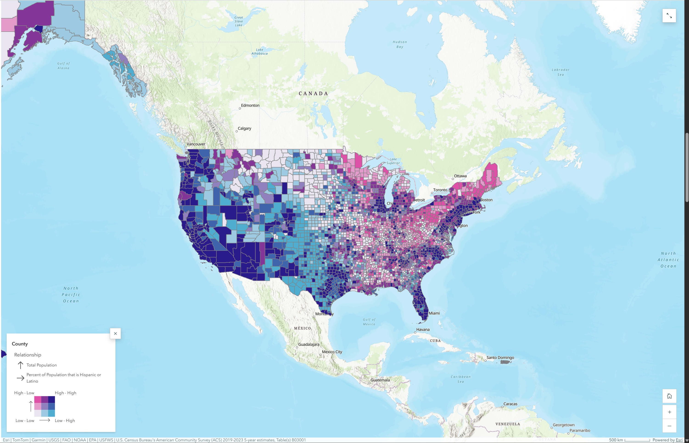

Cartography / Fall 2024
U.S. Population and Hispanic/Latino Concentration
A county-level bivariate map presented through ArcGIS StoryMaps.
The problem
How can a map show the relationship between total population and Hispanic/Latino population share across U.S. counties? My project explored those patterns for an audience of policymakers, community organizations, researchers, and educators.
My role
I designed the bivariate choropleth, wrote and assembled the StoryMap, gathered feedback, and revised the presentation. The final project report documents changes to the initial map view, legend explanation, and title.
Data and method
The report identifies U.S. Census Bureau TIGER/Line county and state boundaries and American Community Survey population data. I paired total population with Hispanic/Latino population percentage in a bivariate choropleth, using three quantile classes for each variable.
A bivariate map represents two variables in each county. Three relative classes per variable produce nine combinations, making population size and population share readable together. Quantile classes group counties by their ranked values; they do not mean a universal set of percentage breaks. I experimented with classification and color choices in ArcGIS Pro, then presented the map in ArcGIS StoryMaps.
The supplied StoryMap screenshot credits ACS 2019–2023 five-year estimates, Table B03001. The earlier written report did not record its estimate vintage.
Explore the StoryMap
ARCGIS STORYMAPSThe original interactive StoryMap uses Texas A&M ArcGIS access. The actual map and legend are shown below as a static screenshot.
Open Interactive StoryMap in New Tab (Requires Texas A&M ArcGIS Sign-In) ↗
Open full-size figure ↗
Total population increases upward ↑
Hispanic/Latino population share increases to the right →
Upper left: higher total, lower share. Upper right: higher total, higher share. Lower left: lower total, lower share. Lower right: lower total, higher share.
Three relative classes per variable. The screenshot does not show numeric class breaks. Swatches explain the original legend; they do not recolor the map.
What I found
The pattern I described extended beyond states along the U.S.-Mexico border. My report also discusses Florida and concentrations in Washington, New York, and the Chicago area. The mapped patterns describe geographic variation; the map alone does not establish why those patterns occurred.
What I would do differently
I would document the exact ACS estimate period, test the classification breaks and legend labels with readers, and make the final StoryMap accessible without a university sign-in. I would also separate what the map shows from explanations that need additional evidence.
Project source
GEOG 232 final cartography project, Fall 2024, including the final StoryMap link and written method and interpretation. The reflection describes proposed improvements.